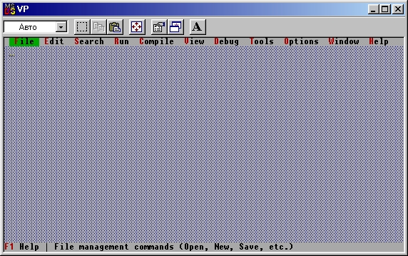

|
|
|
|
Простейшая программа в Turbo Vision
Работа большинства прикладных программ проходит в три этапа: подготовка к работе, собственно работа и, наконец, ее завершение. В нашем случае к подготовительному этапу можно отнести такие действия, как анализ существования файла данных и его (файла) подготовка к работе. На этапе завершения мы должны обеспечить необходимые действия по сохранению файла/Все остальные действия относятся к среднему этапу. С учетом этого можно написать следующую простейшую программу:
begin
{Подготовить работу программы}
{Выполнить необходимые действия}
{Завершить исполнение программы}
end.
Если Вы попытаетесь выполнить эту программу, ничего не произойдет - ведь мы еще никак не конкретизировали необходимые действия. Так обстоит дело в Турбо Паскале, но не так - в Turbo Vision! Для любой прикладной программы Turbo Vision сразу же создает некоторую минимальную программную реализацию, которую Вы можете затем постепенно наращивать в ходе детализации программы. Вот начальный вариант программы с использованием Turbo Vision:
Uses Арр; {Используется модуль АРР библиотеки Turbo Vision}
var
Notebook: TApplication;
begin
Notebook.Init; {Подготовить работу программы}
Notebook.Run; {Выполнить необходимые действия}
Notebook.Done {Завершить исполнение программы}
end.
В этой программе объявляется использование стандартного для Turbo Vision модуля Арр (от application - приложение, прикладная программа). Такое объявление открывает доступ прикладной программе к мощным возможностям Turbo Vision. Чтобы использовать эти возможности, мы объявили переменную Notebook (notebook - записная книжка) типа TApplication. Как Вы вскоре заметите, на букву Т в Turbo Vision начинаются идентификаторы объектов. Таким образом, Notebook - это экземпляр объекта TApplication, т.е. объединение данных (полей) и методов обработки этих данных (процедур, функций, конструкторов, деструкторов). В объекте TApplication предусмотрены методы Init, Run и Done. Вызов этих методов и составляет исполняемую часть нашей программы. Если Вы подготовите и запустите программу, на экране ПК появится изображение, показанное на рис. 15.1.

Рис.15.1. Вид экрана для простейшей программы
Для выхода из программы необходимо, как это следует из надписи в левом нижнем углу экрана, нажать Alt-X или подвести к этой надписи указатель мыши (если, разумеется, Ваш ПК оснащен этим устройством) и нажать ее левую кнопку.
Как видите, даже простейшая программа «знает», как создать экран, распознает команду Alt-X и может работать с мышью. Совсем не плохо для трех исполняемых операторов, не так ли? Такие возможности доступны потому, что в объекте TApplication предусмотрены соответствующие методы. В этом смысле использование объектов напоминает использование подпрограмм из библиотек. Однако в отличие от подпрограммы любой объект имеет все необходимые ему данные. Говоря об объектах, я часто буду использовать такие слова, как «знает», «умеет», «может», подчеркивая тем самым главную отличительную особенность объектов от традиционных подпрограмм - их «разумность»: последовательное проведение в жизнь принципа инкапсуляции (объединения) данных и всех необходимых для их обработки методов придает объекту определенную независимость от других элементов программы; объекты как бы «живут» в программе своей независимой жизнью.
Простейшая программа не может выполнять никаких других действий, кроме уже перечисленных, так как именно эти действия запрограммированы в методах Init и Run объекта TApplication. В ходе их выполнения на экране создается изображение, имеющее три зоны: верхняя строка, нижняя строка и вся остальная часть экрана. Верхняя строка обычно используется для размещения опций главного меню (не забывайте, что Turbo Vision - это оболочка для диалоговых программ!). Нижняя строка - строка статуса: в ней указываются так называемые командные клавиши, т.е. клавиши или комбинации клавиш, которые вызывают нужные действия без перехода к промежуточному диалогу. Вся остальная часть экрана составляет «рабочий стол» программы - сюда будут помещаться сообщения, здесь будут размещаться окна, «выпадающие» меню (меню нижнего уровня) и т.п.
|
|
|
|